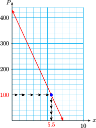

Section 2.4 Linear Equations and Inequalities
¶Subsection Solving Equations
We solve an equation by isolating the variable on one side of the equation. If an equation involves two or more operations, we must undo those operations in reverse order.
Example 2.22.
The expression \(T=50+15u\) describes college tuition consisting of a $50 registration fee plus $15 per unit. How many units can you take if you have $290 saved for tuition?
We can answer the question by solving the equation
where we have substituted $290 for the tuition, \(T\text{.}\) Think about the expression \(50+15u\text{.}\) How would you evaluate this expression if you were given a value for \(u\text{?}\) Following the order of operations, you would
In order to solve the equation, we must reverse these two steps to undo the operations and isolate the variable. We first subtract 50 from both sides of the equation:
This isolates the term that contains the variable, \(15u\text{.}\) Then we divide both sides of the equation by 15.
You can enroll in 16 units. We can check the solution by substituting 16 for \(u\) in the original equation.
Because a true statement results, the solution checks.
Look Closer.
In Example 1, notice how we reversed the operations used in the equation.
Strategy for solving equations.
To solve an equation that involves two or more operations, we undo those operations in reverse order.
Example 2.23.
Solve \(~8-3x=-10\)
The left side of the equation has two terms: \(8\) and \(-3x\text{.}\) We want to isolate the term containing the variable, so we subtract 8 from both sides.
Next, we divide both sides by \(-3\) to get
The solutions is 6.
Caution 2.24.
In Example 2, the term \(-3x\) means "\(-3\) times \(x\text{,}\)" so we divide both sides by \(-3\text{.}\) Do not try to add 3 to both sides.
Subsubsection Reading Questions
1.
If an equation involves more than one operation, how must we undo those operations?
In reverse order
2.
Delbert says he solved the equation \(-5x=15\) by adding \(5\) to both sides. What is wrong with his method?
He should divide by \(-5\text{.}\)
Subsection Applied Problems
Problem solving often involves signed numbers, either in the equation that models the problem or in its solution, or both.
Example 2.25.
The trout population in Clear Lake is decreasing by approximately 60 fish per year, and this year there are about 430 trout in the lake. If the population drops to 100, the Park Service will have to restock the lake.
- Write an equation for the population \(P\) of trout \(x\) years from now.
- When will the Park Service have to restock the lake?
- Graph your equation for \(P\text{,}\) and illustrate your answer to part (b) on the graph.
- The population starts this year at 430, and decreases by 60 for each following year. Thus, \(P=430-60x\text{.}\)
- We would like to find the value of \(x\) when \(P=100\text{.}\) We substitute 100 for \(P\text{,}\) and solve the equation for \(x\text{.}\)\begin{equation*} \begin{aligned} 100 \amp = 430-60x \amp \amp \blert{\text{Subtract 430 from both sides.}}\\ \blert{-430} \amp = \blert{-430}\\ -330 \amp = -60x \end{aligned} \end{equation*}\begin{equation*} \begin{aligned} \dfrac{-330}{\blert{-60}} \amp = \dfrac{-60x}{\blert{-60}} \amp \amp \blert{\text{Divide both sides by}~-60.}\\ 5.5 \amp = x \end{aligned} \end{equation*}The Park Service will have to restock the lake in five and a half years, if the population continues to decline at the current rate.
- The figure shows the graph of the equation \(P=430-60x\text{.}\) To solve\begin{equation*} 100=430-60x \end{equation*}we locate the point on the graph with \(P=100\text{,}\) and read its \(x\)-coordinate, at about 5.5.
Subsection Solving Inequalities
A statement that uses one of the symbols \(\gt\) or \(\lt\) is called an inequality.
Examples of inequalities are
Unlike the equations we have studied, which have at most one solution, an inequality can have infinitely many solutions. A solution of an equation or inequality is said to satisfy the equation or inequality.
Example 2.26.
Solve the inequality \(~x \lt 2\)
The solutions include \(1, 0, -1, -2\) and all the other negative integers, as well as fractions less than 2, such as \(1\dfrac{3}{5},~ \dfrac{2}{3},\) and \(\dfrac{-17}{8}\text{.}\) All of these values satisfy the inequality \(~x \lt 2\text{.}\)
In fact, all the numbers to the left of 2 on the number line are solutions of \(~x \lt 2\text{.}\) Because we cannot list all these solutions, we often graph them on a number line as shown below.
Look Closer.
An inequality that uses the symbol for less than, \(\lt\text{,}\) or greater than, \(\gt\text{,}\) is called a strict inequality. A nonstrict inequality uses one of the following symbols.
For example, the graph of all solutions to the inequality
is shown below. We use a solid dot at \(-2\) to show that \(-2\) is included in the solutions.
Subsubsection Reading Questions
3.
A solution of an inequality is said to the inequality.
satisfy
4.
What is the difference between a strict and a nonstrict inequality?
A nonstrict inequality includes "equal to."
The rules for solving inequalities are very similar to the rules for solving equations, with one important difference. In the Activities we will develop the following strategies for solving inequalities.
To solve an inequality.
- We can add or subtract the same quantity on both sides.
- We can multiply or divide both sides by the same positive number.
- If we multiply or divide both sides by a negative number, we must reverse the direction of the inequality.
Example 2.27.
Solve \(~-3x+1 \gt 7,~\) and graph the solutions on a number line.
We isolate on one side of the inequality.
The graph of the solutions is shown below.
Subsection Compound Inequalities
An inequality in which the variable expression is bounded from above and from below is called a compound inequality For example,
is a compound inequality. To solve a compound inequality, we must perform the steps needed to isolate \(x\) on all three sides of the inequality.
Example 2.28.
Solve \(~-3 \lt 2x-5 \le 6\)
To solve for \(x\text{,}\) we first add 5 on each side of the inequality symbols.
Next, to solve \(2 \lt 2x \le 11\text{,}\) we divide each side by 2.
The solution consists of all numbers greater than 1 but less than or equal to \(\dfrac{11}{2}\text{.}\) The graph of the solutions is shown below.
Subsubsection Reading Questions
5.
When do we need to reverse the direction of an inequality?
When we multiply or divide by a negative number.
6.
What is a compound inequality?
One in which the variable expression is bounded from above and from below.
Subsection Skills Warm-Up
¶Subsubsection Exercises
Solve each equation. Try to do so mentally (without using pencil and paper.)
1.
\(\dfrac{u}{3}=6\)2.
\(7=3+s\)3.
\(a-\dfrac{1}{3}=\dfrac{2}{3}\)4.
\(20=5m\)5.
\(\dfrac{1}{4}p=8\)6.
\(7t=5\)Fill in the tables. Then analyze the order of operations in your calculations.
| Table 1 | ||
| \(n\) | \(3n\) | \(3n-5\) |
| \(2\) | \(\hphantom{0000}\) | \(\hphantom{0000}\) |
| \(5\) | \(\hphantom{0000}\) | \(\hphantom{0000}\) |
| \(\hphantom{0000}\) | \(\hphantom{0000}\) | \(7\) |
| \(\hphantom{0000}\) | \(\hphantom{0000}\) | \(22\) |
| Table 1 | ||
| \(m\) | \(\dfrac{m}{4}\) | \(\dfrac{m}{4}+1\) |
| \(8\) | \(\hphantom{0000}\) | \(\hphantom{0000}\) |
| \(12\) | \(\hphantom{0000}\) | \(\hphantom{0000}\) |
| \(\hphantom{0000}\) | \(\hphantom{0000}\) | \(6\) |
| \(\hphantom{0000}\) | \(\hphantom{0000}\) | \(2\) |
7.
Consider the equation \(3n-5=p\text{.}\) Look at Table 1 to help you answer the questions:
- Let \(n=2\text{.}\) Explain how to find \(p\) in two steps.
- Let \(p=7\text{.}\) Explain how to find \(n\) in two steps.
8.
Consider the equation \(\dfrac{m}{4}+1=h\text{.}\) Look at Table 2 to help you answer the questions:
- Let \(m=8\text{.}\) Explain how to find \(h\) in two steps.
- Let \(h=6\text{.}\) Explain how to find \(m\) in two steps.
9.
- If you put on socks and then put on shoes, what operations are needed to reverse the process?
- You leave home and bicycle north for 3 miles and then east for 2 miles. Suddenly you notice that you have dropped your wallet. How should you retrace your steps?
Subsubsection Answers to Skills Warm-Up
Subsubsection Exercises
Subsection Homework 2.4
Fill in the table in Problems 1–2. Use two steps for each row: Fill in the middle column first. Then use the table to help you answer the questions.
1.
| \(x\) | \(2x\) | \(2x+4\) |
| \(3\) | \(\hphantom{0000}\) | \(\hphantom{0000}\) |
| \(6\) | \(\hphantom{0000}\) | \(\hphantom{0000}\) |
| \(\hphantom{0000}\) | \(\hphantom{0000}\) | \(14\) |
| \(\hphantom{0000}\) | \(\hphantom{0000}\) | \(20\) |
Consider the equation \(y=2x+4\text{.}\)
- Let \(x=3\text{.}\) Explain how to find \(y\) in two steps.
- Let \(y=14\text{.}\) Explain how to find \(x\) in two steps.
2.
| \(q\) | \(q-3\) | \(5(q-3)\) |
| \(3\) | \(\hphantom{0000}\) | \(\hphantom{0000}\) |
| \(\hphantom{0000}\) | \(\hphantom{0000}\) | \(10\) |
| \(4\) | \(\hphantom{0000}\) | \(\hphantom{0000}\) |
| \(\hphantom{0000}\) | \(\hphantom{0000}\) | \(20\) |
Consider the equation \(5(q-3)=R\text{.}\)
- Let \(q=3\text{.}\) Explain how to find \(R\) in two steps.
- Let \(R=10\text{.}\) Explain how to find \(q\) in two steps.
For Problems 3–17, solve.
3.
\(6x-13=5\)4.
\(\dfrac{2a}{5}=8\)5.
\(\dfrac{x}{4}+2=3\)6.
\(6x+5=5\)7.
\(24=4(p-7)\)8.
\(0=\dfrac{5z}{7}\)9.
\(\dfrac{k+4}{5}=9\)10.
\(\dfrac{2x}{3}-5=7\)11.
\(7=\dfrac{4b-3}{3}\)12.
\(3c-7=-13\)13.
\(-5=-2-3t\)14.
\(-3(2h-6)=-12\)15.
\(1-\dfrac{b}{3}=-5\)16.
\(\dfrac{3y}{5}+2=-4\)17.
\(\dfrac{5x}{2}+10=0\)For Problems 18–19, solve.
18.
\(11.8w-37.8=120.32\)19.
\(9.7(2.6+v)=58.2\)For Problems 20–28,
- Solve each inequality algebraically.
- Graph your solutions on a number line.
- Give at least one value of the variable that is a solution, and one value that is not a solution.
20.
\(x+10 \le 5\)21.
\(-3y \lt 15\)22.
\(\dfrac{x}{3} \le 4\)23.
\(2x+3 \gt 7\)24.
\(-3x+2 \le 11\)25.
\(-3 \gt \dfrac{2x}{3}+1\)26.
\(-3 \le 3x \le 12\)27.
\(23 \gt 9-2b \ge 13\)28.
\(-8 \le \dfrac{5w+3}{4} \lt -3\)29.
Delbert is thinking of a number. If he multiplies the number by 5 and then subtracts 6, the result is 29. What is the number?
For Problems 30–31, find the error in the "solution," then write a corrected solution.
30.
\(\begin{aligned}[t] 6-3x \amp = -12\\ -3x \amp = -6\\ x \amp = 2 \end{aligned}\)
31.
\(\begin{aligned}[t] -2+\dfrac{2}{3}x \amp = -4\\ -2+2x \amp = -12\\ 2x \amp = -10 \\ x \amp =-5 \end{aligned}\)
For Problems 32–33, use the graphs to answer the questions.
32.
Francine's new puppy weighed 3.8 pounds when she brought it home, and it should gain approximately 0.6 pound per week. The graph shows the puppy's weight, \(W\text{,}\) after \(t\) weeks.
- Estimate the puppy's weight after 8 weeks.
- Estimate how long it will take for the puppy to reach 26 pounds.
- Write an algebraic equation for \(W\) in terms of \(t\text{.}\)
- Write and solve an equation to verify your answer to part (b).
33.
Marvin's telephone company charges $13 a month plus $0.15 per minute. The graph shows Marvin's phone bill, \(P\text{,}\) if he talks for \(m\) minutes.
- Estimate Marvin's phone bill if he talks for 45 minutes.
- Estimate the number of minutes Marvin talked if his phone bill is $25.
- Write an algebraic equation for \(P\) in terms of \(m\text{.}\)
- Write and solve an equation to verify your answer to part (b).
For Problems 34–38,
- Choose a variable for the unknown quantity.
- Write an equation that involves your variable.
- Solve your equation, and answer the question.
34.
Simona bought a car for $10,200. She paid $1200 down and will pay the rest in 36 monthly installments. How much is each installment? (Hint: Write an equation about the total amount Simona pays.)
35.
Every school day, each member of the cross-country team runs a certain distance , which is assigned on the basis of ability, plus a half mile around the track. Greta runs 22.5 miles per week. What is her assigned distance? (Hint: Write an equation about the total distance Greta runs in one school week.)
36.
The Tree People planted new trees in an area that was burned by brush fires. 60% of the seeds sprouted, but gophers ate 38 of the new sprouts. That left 112 new saplings. How many seeds were planted? (Hint: Write an equation about the number of seeds that survived.)
37.
During a four-day warming trend, the temperature rose from \(-6 \degree\) to \(26 \degree\text{.}\) What was the average change in temperature per day?
38.
Eric is on a diet to reduce his current weight of 196 pounds to 162 pounds. If he loses 4 pounds per week, how long will it take him to reach his desired weight?
Use one of the formulas below to solve Problems 34–38.
39.
A farmer has 500 yards of fencing material to enclose a rectangular pasture. He would like the pasture to be 75 yards wide. How long will it be?
40.
A triangular sail requires 12 square meters of fabric. If the base of the sail measures 4 meters, how tall is the sail?
For Problems 41–42, write and solve an equation to find the value of \(x\text{.}\)